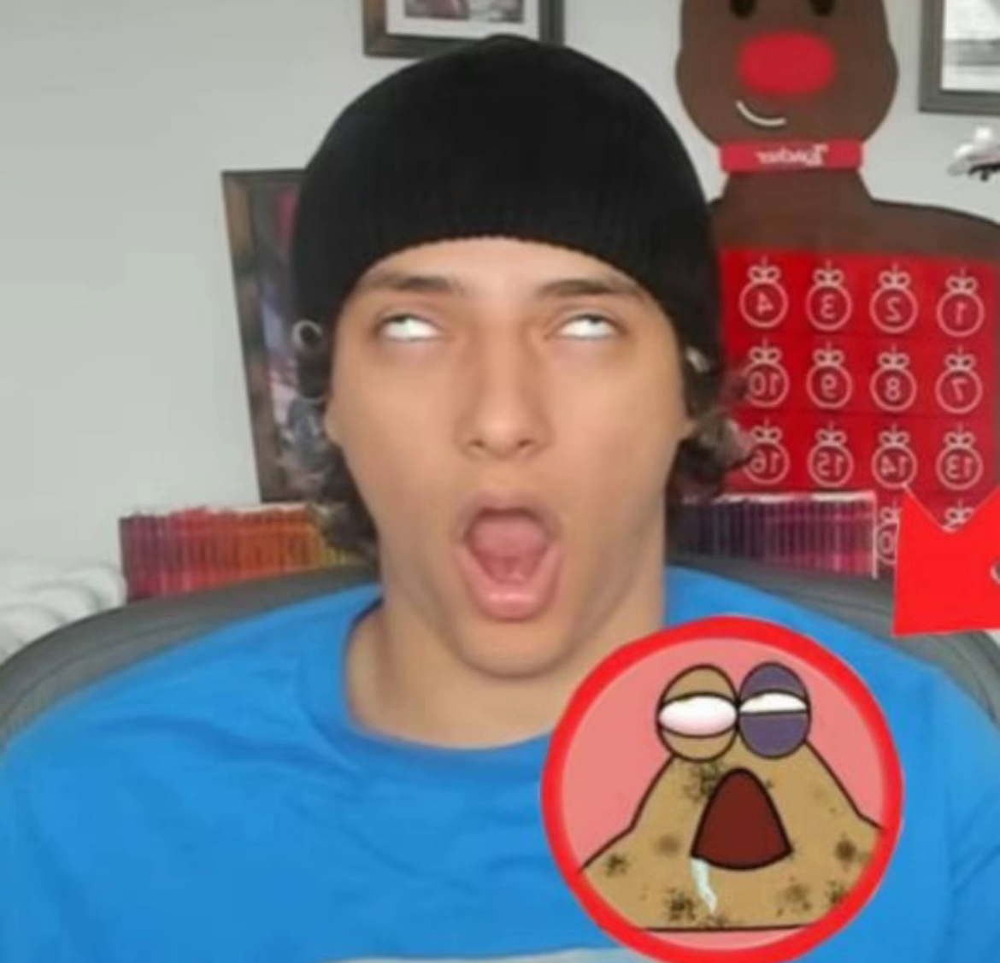

ARTIST STATEMENT: I combined two things I was thinking about and made it into an Illustration. A container of cat blueberries is on the table while a large hand grabs a fellow blueberry to eat it. The cat blueberry that is being taken has a shocked and terrified look while the other blueberries are minding their own business.I tried to only use shapes that were taught to us, I manipulated the shapes by using the curvature tool.
ARTIST STATEMENT: I wanted to make a healthy drink that is child friendly. Purrzac brain juice is a product that boosts focus for better performance. This juice comes in fruity flavors that consumers can enjoy. The brand layout presents the final logo, the front package design, the juice box, brand color palette, and the font in alphabetical order. The poster features two juice boxes, fruit flavors, and eye catching slogans. I used different geometric shapes based on the lessons we had on Illustrator to bring my project to life.
ARTIST STATEMENT: This character sheet features a character from a story that I am creating. I wanted to create a sheet that is personal to my character such as showing her belongings. Content: In the top left corner is Maddie’s facial profile, next to it is her color palette, then her full body profile front and back. On the bottom left corner is the character bio, next to it is her full body in motion, and the bottom right corner shows what she is always carrying with her to the viewer. I used different tools to create my character such as the pen tool, shape tools, gradients, different fonts, transparency and other elements.
ARTIST STATEMENT: Purrzac is a concept brand I created that would essentially both bring awareness to various mental health conditions and also provide prescription SSRIs for those properly diagnosed by psychiatrists for treatment. Page 1 shows a brand layout with the logotype and sub mark, the color palette, and typeface. Page 2 contains information about the brand with a silhouette that’s a head on the bottom left corner with the submark in area where the brain would be bringing illustration and design together. The colors are soft but vibrant enough to grab your attention and seem more friendly and cute for a brand that is medical.
This art sucks
This art sucks
This art sucks
This art sucks